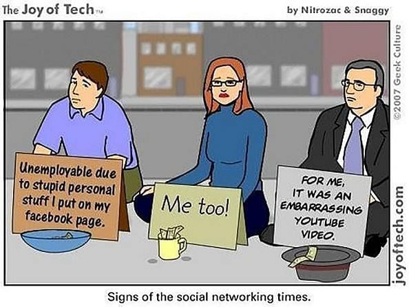

6. The Challenges of Social Media

Social Media is relatively a newer technology, hence, it is a little difficult to establish its long-term good and bad consequences. However, multiple researchers have concluded a strong relationship between heavy use of social media platforms with an increase in risk of depression, self-harm, anxiety, and loneliness.
Fear of Missing Out (FOMO)
Long-use of social media platforms make you addicted to checking out what other people are doing. FOMO is an exacerbated feeling that other people are living better lives or having more fun compared with you. This feeling makes you check your notification every second, just to make yourself feel better.
Cyberbullying
Teenagers need to fit in, to be popular, and to outdo others. This process was challenging long before the advent of social media. Add Facebook, Twitter, Snapchat, and Instagram into the mix, and you suddenly have teenagers subjected to feeling pressure to grow up too fast in an online world.
The Cyberbullying Institute’s 2019 survey of U.S. middle and high school students found that over 36 percent report having been cyberbullied at some point in their life, with 30 percent having been victimized twice or more. It also found that almost 15 percent admitted to having cyberbullied someone at least once, and nearly 11 percent admitting to doing it two or more times. Teenagers can misuse social media platforms to spread rumors, share videos aimed at destroying reputations, and to blackmail others.
Lack of Privacy
Stalking, identity theft, personal attacks, and misuse of information are some of the threats faced by social media users. Most of the time, the users themselves are to blame as they share content that should not be in the public eye. The confusion arises from a lack of understanding of how the private and public elements of an online profile actually work.
Unfortunately, by the time private content is deleted, it’s usually too late. and the content can cause problems in people’s personal and professional lives..